Programas y máqina virtual
En este apartado aprenderá a descargar, crear y configurar una máquina virtual.
Ir al apartadoUbuntu
¿Quieres aprender a instalar Ubuntu en una máquina virtual?
Este es tu apartado.
Ir al apartadoAntes de empezar la instalación y configuración, deberás saber qué es una VirtualBox, un Sistema Operativo, una ISO y SAMBA, así que me pondré a ello para explicarte qué son y algunas características sobre ellos.
¿Qué es una VirtualBox?
Una VirtualBox es un software de virtualización que permite crear máquinas virtuales en tu ordenador.
¿Qué podemos hacer con VirtualBox?
Con VirtualBox, puedes instalar y ejecutar múltiples sistemas operativos en una misma máquina física. Esto es útil para propósitos de desarrollo, pruebas de software, configuraciones de red, educación, entre otros. VirtualBox es una herramienta gratuita y de código abierto desarrollada por Oracle.
Al crear una máquina virtual con VirtualBox, puedes asignar recursos como memoria RAM, espacio de disco y procesador a cada sistema operativo virtual. Esto te permite experimentar con diferentes sistemas operativos y configuraciones sin afectar tu sistema principal.
¿Qué es una máquina virtual?
Una máquina virtual es un entorno virtual que simula un sistema informático completo, incluyendo hardware y software, dentro de tu ordenador físico.
¿Qué es un Sistema Operativo?
Un sistema operativo es un software que actúa como intermediario entre el hardware de una computadora y los programas de aplicación. Es un conjunto de programas que gestionan los recursos de hardware de la computadora y proporcionan servicios a los programas de software.
¿Cuáles son las funciones de un Sistema Operativo?
Algunas funciones clave de un sistema operativo incluyen la gestión de la memoria, la gestión del procesador, la gestión de archivos y directorios, la gestión de dispositivos de entrada/salida, y la interfaz de usuario.
¿Cuáles son los Sitemas Operativos más comunes?
Los sistemas operativos más comunes son Windows, macOS, Linux y Android, cada uno con sus propias características y funcionalidades específicas.
¿Qué es una ISO?
Una ISO es un archivo informático donde se almacena una copia o imagen exacta de un sistema de archivos.
¿Qué es SAMBA?
SAMBA es un software que implementa el protocolo SMB y permite a las distribuciones de Linux/Ubuntu compartir archivos e impresoras con cualquier otro dispositivo conectado a la red.
Programas y máquina virtual
Primer paso "Descarga de los programas"
Descargamos (eligiendo el Sistema Operativo en el que vayamos a instalarla) e instalamos la VirtualBox que la puedes encontrar pinchando aquí, lo único que debemos tener en cuenta es que creará un controlador virtual de tarjeta de red.
En mi caso, he elegido la opción marcada en azul.
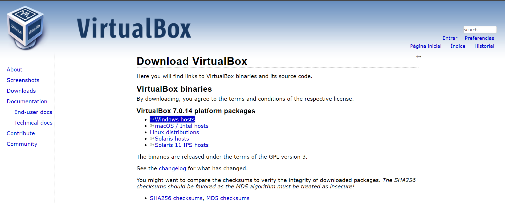Para poder usar la VirtualBox necesitaremos un Sistema Operativo, así que instalaremos la ISO de Windows y la de Ubuntu en sus versiones 10 y 22.04.4 respectivamente.
Primero, descargaremos la ISO de Windows 10 a través de su página oficial que podrás encontrar aquí.
Para poder descargar la ISO, tendremos que hcaer click en "Descargar ahora la herramienta"
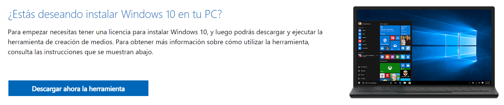Una vez descargada la ISO de Windows 10, descargaremos la ISO de Ubuntu que, como se dijo anteriormente, será su versión 22.04.4 y la cuál se podrá encontrar aquí, en su página web.
Windows 10
Primer paso "Instalación de la máquina virtual Windows 10"
Nombra y selecciona el Sistema Operativo que vayas a instalar en la máquina virtual.
Inserta la ISO que descargaste anteriormente y pulsa en siguiente.
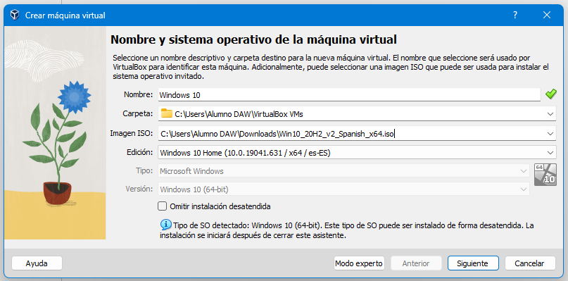Segundo paso "Configuración de la instalación desatendida"
Configura el usuario y la contraseña a tu gusto, una vez terminado
Una vez configurados, inserta la clave genérica de Windows que te facilitaré bajo la imagen (puedes copiarla y pegarla)
Puede que te dé problemas si windows aparece separado del número, en este caso, tendrás que quitar el espacio para que queden juntos y se quite el problema.
Tras insertar la clave y resolver el problema, si es que sale, pulsa en siguiente.
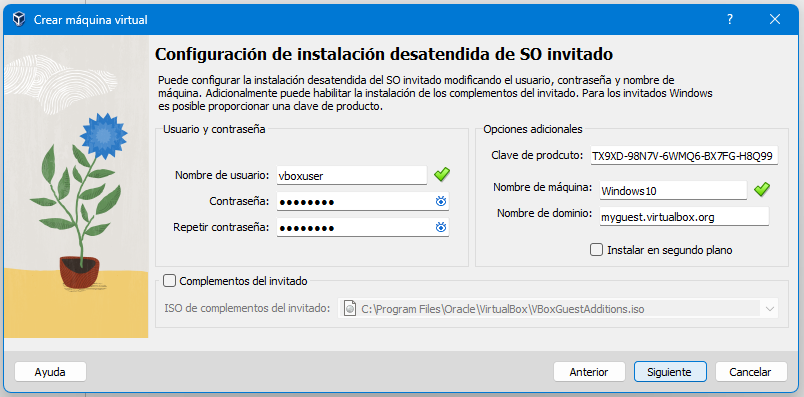*clave genérica de Windows: TX9XD-98N7V-6WMQ6-BX7FG-H8Q99*
Tercer paso "Ajuste de hardware"
Ajusta el hardware poniendo de memoria base 4096MB, un total de 2 procesadores y pulsa siguiente.
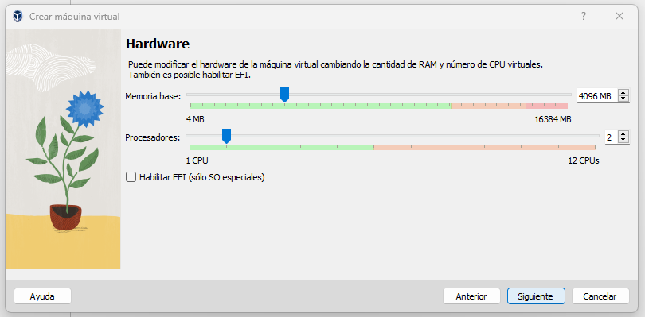Cuarto paso "Disco duro virtual"
Deja el disco duro tal y como te aparece al pulsa siguiente en el paso anterior, 50,00GB y pulsa en siguiente
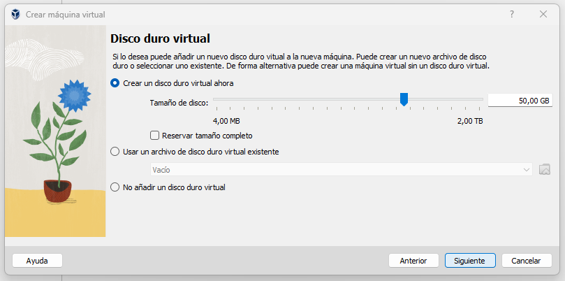Quinto paso "Resumen de instalación"
Lee el resumen de la instalación que has ajustado en los pasos anteriores y, si todo está en orden, pulsa en terminar.
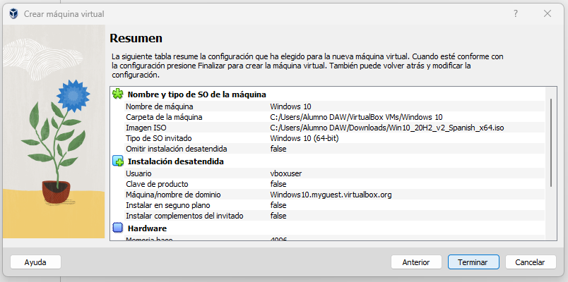Ubuntu
Primer paso "Instalación de la máquina virtual Ubuntu"
Este paso es igual que el de la instalación de Windows 10.
Nombra y selecciona el Sistema Operativo que vayas a instalar en la máquina virtual.
Inserta la ISO que descargaste anteriormente y pulsa en siguiente.
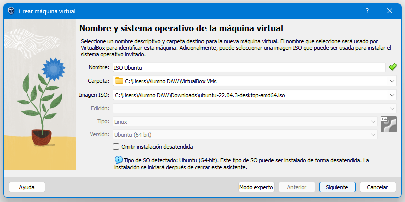Segundo paso "Configuración de la instalación desatendida"
Configura el usuario y la contraseña a tu gusto, una vez terminado
A diferencia de Windows, Ubuntu no tiene clave genérica, así que dejaremos esa parte tal y como está.
Una vez realizado esto, seleccionaremos siguiente.
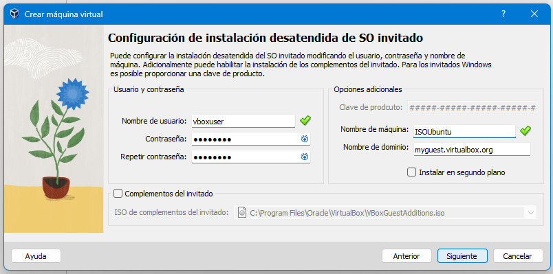Tercer paso "Ajuste de hardware"
Ajusta el hardware poniendo de memoria base 4096MB, un total de 2 procesadores y pulsa siguiente.
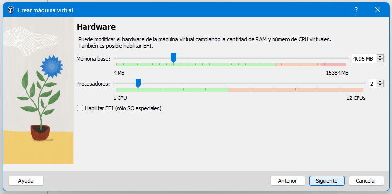Cuarto paso "Disco duro virtual"
Deja el disco duro tal y como te aparece al pulsa siguiente en el paso anterior, 25,00GB y pulsa en siguiente
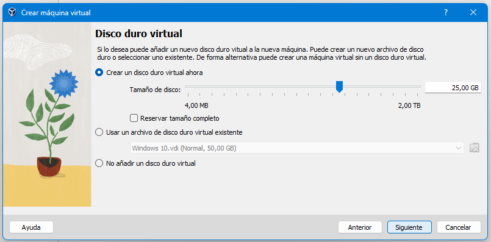Quinto paso "Resumen de instalación"
Lee el resumen de la instalación que has ajustado en los pasos anteriores y, si todo está en orden, pulsa en terminar.
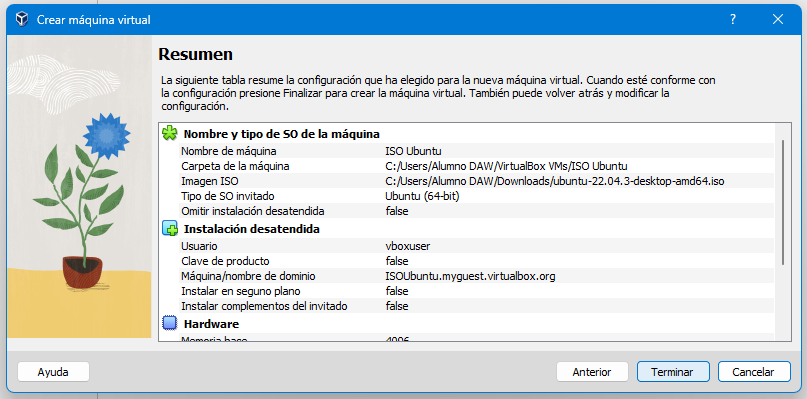SAMBA
La instalación de SAMBA es muy sencilla.
Primer paso "Instalación de SAMBA"
Instala el paquete de SAMBA con el comando apt-get
Luego, comprueba que está bien instalado y activado
Una vez escrito el comando anterior y comprobado, te deberá salir el siguiente mensaje:
Segundo paso "Configuración del servidor"
Para poder configurar el servidor deberás crear un directorio, para ello puedes utilizar el comando /samba.
Una vez creado el directorio, tendrás que usar el comando nano para que deban entrar en el fichero /etc/samba/smb.conf.
A continuación, añadimos las siguientes líneas al final del fichero:
[samba-share]
comment = Samba on Ubuntu
path = /samba
read only = no
browsable = yes
Tercer paso "Agregar usuario al servidor SAMBA"
SAMBA requiere de un usuario del sistema para acceder al recurso compartido, así que debes añadir un nuevo usuario al sistema usando este comando useradd [nombre-usuario].
Una vez hayas agregado el nuevo usuario al sistema, deberás agregar el usuario al servidor de SAMBA usando este comando smbpasswd -a [nombre-usuario].
Al ejecutar el comando, te pedirá una contraseña para el usuario la cuál sera la contraseña para conectarse a SAMBA.
Cuarto paso "Creación de una carpeta pública y asignación de permisos"
Para terminar, te hace falta crear la carpeta pública, la cual van a ver los usuarios que se conecten a tu servidor.
Crea el directorio /samba/public.
Una vez creado, escribe estos 3 comandos para establecerle todos los permisos necesarios para los demás usuarios que quieran conectarse al servidor.
sudo chown -R nobody:nogrop /samba/public
sudo chown -R 0777 /samba/public
sudo chgrp sambashare /samba/public
Ahora tendrás que reiniciar el servidor de SAMBA para aplicar todos los cambios, para ello tendras que usar el comando sudo systemctl restart smbd.service.
De esta forma ya tendrás instlado el servidor de SAMBA en Ubuntu.
Quinto paso "Conectarse a SAMBA"
Antes de conectarte, deberás saber la dirección IP del servidor de SAMBA.
Para ello, uaremos el comando ifconfig.
Para conectarte desde Linux deberás ir al Explorador de Archivos > Red, entonces podrás ver como te aparece una carpeta con el nombre de tu usuario, dicha carpeta será tu carpeta de SAMBA.
Para conectarte desde Windows deberás de pulsar la combinación de teclas Windows + r para escribir dentro del campo: //ip-servidor/samba-share.
Sin embargo, si dispones de un Mac y quieres conectarte desde él, deberás ir al Finder > Conectarse al servidor y escribir dentro del campo: smb://ip-servidor.